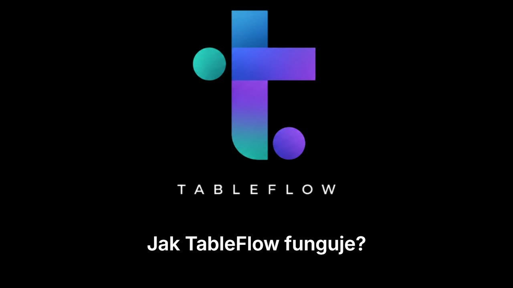

Hosté
Pro hosty i provoz
Objednávání od stolu
Hosté si vybírají jídlo a pití na tabletu přímo u stolu a objednávku odešlou sami. Obsluha má méně ručního zapisování a více času na péči o hosty — zvlášť ve špičce.

Jak objednávání od stolu probíhá
-
Menu u stolu
Fotografie, popisy, alergeny a ceny — host si prohlíží nabídku bez čekání na jídelní lístek.
-
Úpravy a košík
Vybere přílohy a doplňky, zkontroluje košík a odešle objednávku ke stolu.
-
Předání do provozu
Objednávka jde do propojené pokladny. Kuchyně a bar pracují ve stejném toku jako dosud.
Co objednávání od stolu mění
Obsluha
Méně přepisování
Více prostoru věnovat se stolům, méně chyb z ručního zápisu.Provoz
Jeden tok do pokladny
Objednávky neběží v odděleném „paralelním“ systému mimo pokladnu.Od stolu až do pokladny
Tableflow není jen digitální menu. Host objednávku odešle a ta se předá do pokladny (Dotykačka; Storyous za podmínek). Tablety u stolu nabízíme formou pronájmu.
- Bez aplikace v telefonu hosta
- Alergeny a úpravy položek přímo v menu
- Volitelná platba přes podporované řešení Dotykačky (QR na telefonu hosta)

Časté otázky k objednávání od stolu
Jak funguje objednávání od stolu?
Host si na tabletu u stolu prohlédne menu, upraví položky a odešle objednávku. Ta se předá do propojené pokladny ke konkrétnímu stolu. Host nepotřebuje vlastní aplikaci.
Pomáhá to ve špičce?
Ano. Hosté můžou objednat i tehdy, když je obsluha vytížená u jiných stolů.
Umí host na tabletu i zaplatit?
Pokud má restaurace aktivní podporované platební řešení Dotykačky, host může zaplatit na telefonu přes QR kód. Tableflow platby samo nepřijímá. U Storyous platba kartou přes tablet Tableflow není dostupná.

Chcete objednávání od stolu u vás?
Napište na info@tableflow.cz nebo vyplňte formulář. Rádi předvedeme průběh objednávky přímo ve vaší provozovně.